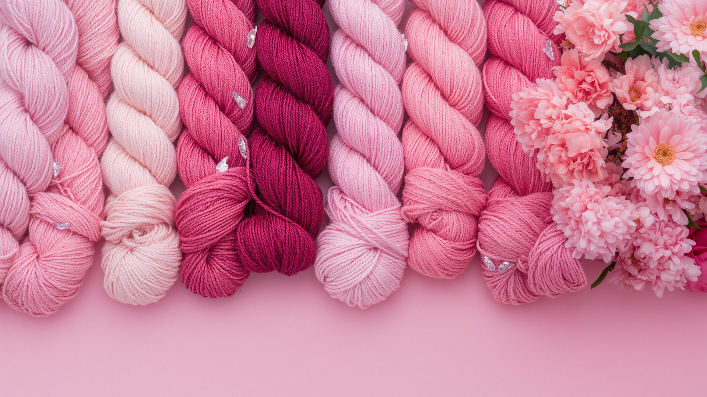

Historias Tejidas
Porque tu recuerdo, merece ser recordado.
Un recuerdo, una persona, un personaje. Tú eliges qué historia llevar por siempre.
Más que un tejido, una historia
Hay regalos que simplemente se entregan.
Pero hay otros que hacen recordar por siempre y para siempre.
Un recuerdo
Convierte un momento especial en algo tangible.
Una persona
Representa a alguien importante para ti.
Algo muy tuyo
Crea un diseño inspirado en aquello que te identifica, te apasiona y más.